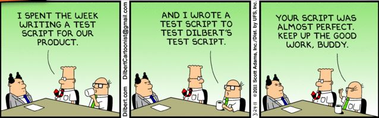
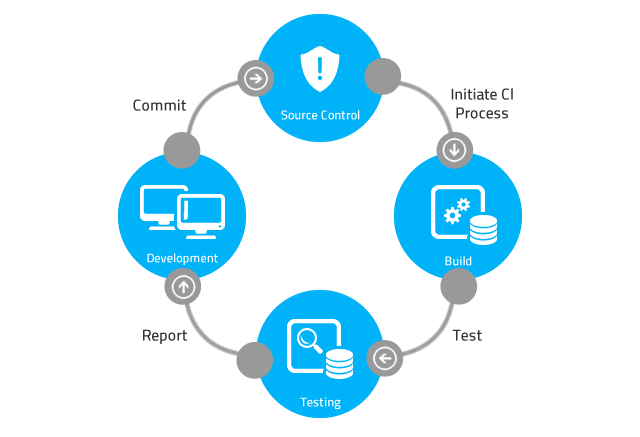

JavaScript
Unit Testing

Why should we automate client side testing?

- Business logic is moving from server to client
- The same benefits of server side testing transfer to client
Verify Expectations
- Happy path
- Error conditions
- Invalid input
- Unexpected input
Prevent regressions

a.k.a. Whack-a-mole!

- Fix a bug, introduce another...
Document Specs
The only documentation that is kept up to date
describe('Password Validator', function() {
it('Rejects short passwords', function() {
var password = 'foo';
var result = passwordValidator.isValid(password);
expect(result).to.be(false);
});
it('Accepts password with mixed chars', function() {
var password = 'abc123*&^%FEG'
var result = passwordValidator.isValid(password);
expect(result).to.be(true);
});
});
Refactor with Confidence
Leads to cleaner code


- If it's hard to test, that's a smell!
In the words of Uncle Bob...
Why don't we clean up code that we know is messy? We're afraid we'll break it. But if we have the tests, we can be reasonably sure that the code is not broken, or that we'll detect the breakage immediately. If we have the tests we become fearless about making changes. If we see messy code, or an unclean structure, we can clean it without fear. Because of the tests, the code becomes malleable again. Because of the tests, software becomes soft again.
JavaScript Unit Testing Challenges
- What are the units?
- Asynchronous execution
- DOM manipulation
- What tools are available?
What are the units?
$('button').click(function() {
var query = $('input').text();
// Validation rule: only search if we have a query of at least two chars
if (query && query.length >= 2) {
$.ajax(url: 'http://content.guardianapis.com/search?show-fields=all&q=' + query, success: function(data) {
var items = data.response.results;
for (i = 0; i < items; i++) {
// Business rule: only show news items that have pictures
if (item.fields.thumbnail) {
// sentiment is a global!
sentimentResult = sentiment.analyze(item.fields.trailText);
$('table').append('<tr>')
$('table').append('<td>' + item.fields.byline + '</tr>') // author
$('table').append('<td>' + item.fields.trailText + '</tr>') // content
$('table').append('<td>' + item.fields.thumbnail + '</tr>') // thumbnail
$('table').append('<td>' + item.fields.webUrl + '</tr>') // url
$('table').append('<td>' + item.fields.webTitle + '</tr>') // title
$('table').append('<td>' + item.fields.webPublicationDate + '</tr>') // publishDate
$('table').append('<td>' + sentimentResult + '</tr>') // sentiment analysis
$('table').append('</tr>')
}
}
}, error: function(jqXHR, textStatus, errorThrown) {
$('.errorBox').text(textStatus + ', ' + errorThrown);
$('.errorBox').show();
});
}
});
Use a module system
// News Module
define(['jquery', 'sentiment'], function($, sentiment) {
var init = function(config) { ... },
var validate = function(query) { ... },
var search = function(query) { ... },
var process = function(items) { ... },
var display = function(loadInto, items) { ... }
});- Break up logic into small functions
- Declare dependencies in separate modules
Stack for BDD Style Testing
- Mocha test framework describe... it...
- Chai Assertion Library expect... to...
- Sinon.JS spies, stubs, and mocks
- Karma Runner Multiple browsers, reporters
- Grunt Run automation, local and CI
- Jasmine is an alternative that can be used in place of Mocha, Chai and Sinon
DEMO News Application
Demo
Simple function with inputs and output
- No dependencies
- Synchronous
- No side effects
Demo
Using Sinon to mock out dependency
- Test one thing only
- Mock out everything else
- Verify interactions
Demo
Asynchronous Execution
- Use promises
- Use sinon to mock and replace function - resolve or reject
- Call Mocha's done() method to signify end of test
Demo
DOM Manipulation
- Use Karma html2js plugin
- Inject HTML snippet for code to operate on
- Use jQuery to verify HTML snippet was modified
Karma Features
- Capture multiple browsers


- Test from other devices
- Coverage reporter
- Many other plugins available
Continuous Integration
- Because developers are human
- and sometimes forget...
- to run the tests before pushing!

Continuous Integration
- 